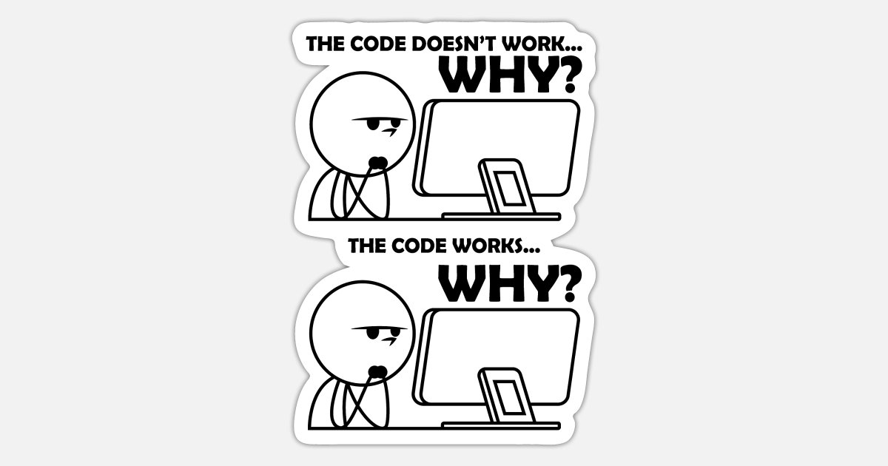

man doing coding last minute and half a wake is hard but I will be creative in my own way, mostly trying to be funny

things I have to do
work on page 1
work on page 2
work on home page
sleep in bed(the best one)
home
|
do you forget to do big projets and sramble to do them last minute?